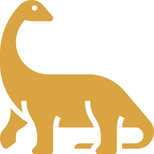
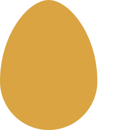

Safári Dos Gigantes
Passeio em veículos elétricos guiados por trilhos, atravessando o recinto dos Braquiossauros e Parasaurolophus. Uma experiência única de proximidade com os maiores herbívoros da Isla Nublar.
Explore trilhas seguras, mirantes panorâmicos e encontros inesquecíveis com os gigantes da Isla Nublar.
Passeio em veículos elétricos guiados por trilhos, atravessando o recinto dos Braquiossauros e Parasaurolophus. Uma experiência única de proximidade com os maiores herbívoros da Isla Nublar.

Mirante panorâmico com deck de observação e binóculos de longo alcance, onde visitantes contemplam os Braquiossauros em seu habitat natural. Uma visão imponente que marca para sempre.

Espaço educativo onde visitantes acompanham ovos em incubação e filhotes recém-nascidos através de vidro blindado. Uma experiência única que revela os primeiros passos da vida jurássica.
O coração da experiência turística: restaurante temático com pratos inspirados na era jurássica, loja de souvenirs exclusivos e o cinema 4D ‘A Era dos Dinossauros’. Um espaço para descanso, diversão e imersão completa no universo do parque.